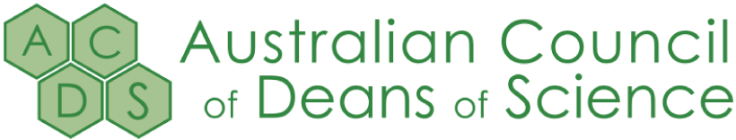

The study of complex analysis is important for students in engineering and the physical sciences and is a central subject in mathematics. In addition to being mathematically elegant, complex analysis provides powerful tools for solving problems that are either very difficult or virtually impossible to solve in any other way.
In this book you will find examples, problems and applets that allow you to explore complex analysis by using the visual interactive power of the computer (or tablet).
UPDATES!
There is a new design in celebration to the 5th
anniversary of this site.
I have also updated many of the JavaScript applets
for better performance.
Don't forget to join me in
Patreon
to get your complex functions gallery.
A few of sections were added and updated:
Limits,
Integration
of complex functions
and Laurent
series,
Topology
of the complex plane and
Complex
differentiation.
Recently, I started working in other projects to
create more online
interactive books. I already have a preview for Real
Analysis.
If you want to know more about it, check my
Patreon.
Ready to get started? Skip ahead to the Table of Contents.
WHAT IT IS ABOUT
This book is an interactive introduction to the theory and applications of complex functions from a visual point of view. However, it does not cover all the topics of a standard course. In fact, it is a collection of selected topics and interactive applets that can be used as a supplementary learning resource by anyone interested in learning this fascinating branch of mathematics.
Some of the topics covered here are basic arithmetic of complex numbers, complex functions, Riemann surfaces, limits, derivatives, domain coloring, analytic landscapes and some applications of conformal mappings.
What distinguishes this online book from other traditional texts in the first instance is the use of interactive applets that allow you to explore properties of complex numbers geometrically and analyze complex functions by using different techniques to visualize them. For the design of applets I used the following open-source softwares:
Although I advocate for the use of computers as an aid to geometric reasoning, I highly encourage you to practice your problem solving skills by solving the suggested exercises, or filling the missing details, that you will encounter throughout the sections.
Think of the computer as a physicist would his laboratory. It may be used to check existing ideas about our world, or as a tool to discover new phenomena which then poses new ideas or challenges for their explanation. Throughout the sections I have provided detailed instructions (in some cases) to explore concepts and relationships about complex numbers using specific softwares, nevertheless you must still keep in mind that computer hardware and software are ephemeral things in comparison with mathematical ideas, which are timeless.
NOTE! If you're on a mobile device, some of the applets might not work super well for you. They are designed for mouse input, so if you're getting frustrated or your finger is in the way, try the site on a computer.
This book was included in the Australian Council of Deans of Science's repository as a teaching and assessment resource to support online learning.
ISSUES?
Of course, no project such as this can be free from errors and incompleteness. If you find applets that don't run correctly, or the examples that aren't explained quite right, or a typo, please report them at this project's GitHub repository. Thanks for your help!
DESIGN CREDITS
The initial design of this site was inpired by the fantastic book Collision Detection written by Jeffrey Thompson. The current version, released in 2024, was built thanks to the following projects:
- LaTeX.CSS by Vincent Dörig
- LatexCSS by David Zollikofer
- The Magic Book project.
SUPPORT THIS PROJECT
If you like my work, you can support it using the links below:
Thank you for your support! ❤️
NAVIGATION
OK, let's begin! Click the link at the bottom the page, or the arrows at the top, to move to the next chapter. The Complex Analysis link at the top will take you back to the Table of Contents.